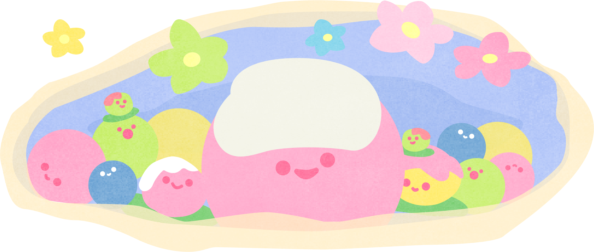
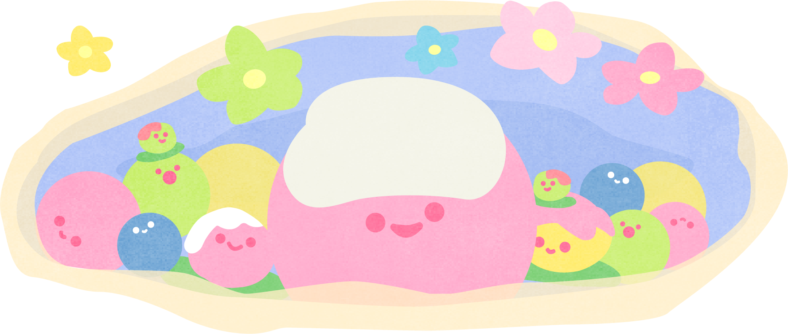

กินสี่ถ้วย
ไปก่อนน้า~
พระพาย
ลาไปก่อน~
หม้อตาล
ลอยกลับแล้ว~
บุหลัน
นอนก่อนนะ~
ช่อม่วง
โดดกลับแล้ว~


เราก็เดินทางกันมาสักพักแล้ว

มีพบต้องมีจาก. . .

มีดัง. . .ก็ต้องมีดับ

ถ้าไม่ปรับ. . .ก็ต้องถูกลืม

บอกลาขนมไทย
ทั้ง 5 ที่เลือนลาง
ขนมไทยมากมายมีช่วงเวลาอันเจิดจรัสของตัวเองในแต่ละยุค
แต่ต่อให้อร่อยและสวยงามแค่ไหน หากไม่ปรับตัวให้ทันตาม
ความชอบของคนรุ่นใหม่ๆก็จะถูกลืมเลือนแล้วลดทอน
บทบาทในการกินจนหายไปในที่สุด